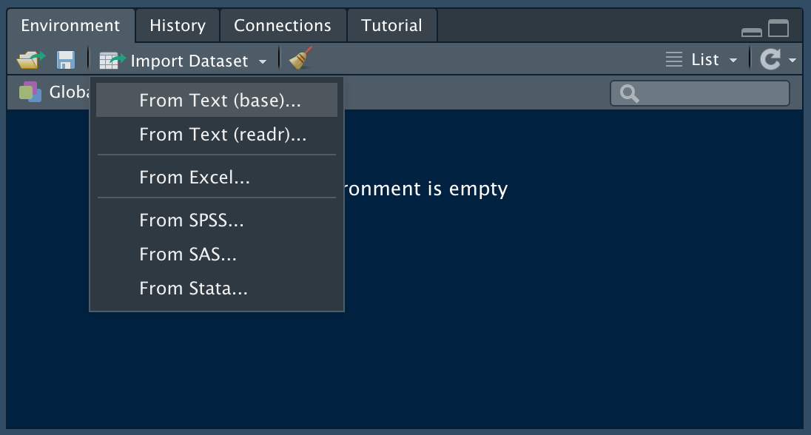
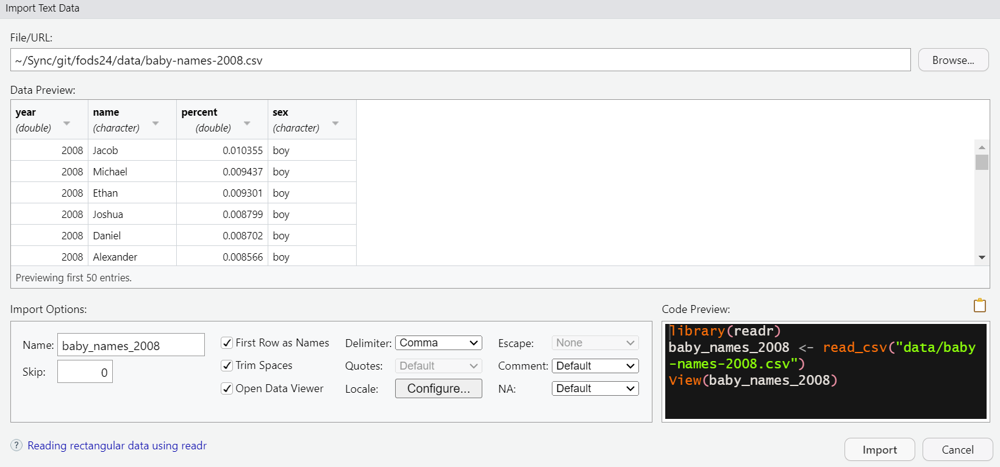

here::here("data", "my_file.csv")Importing and Exporting Data Frames
Under construction.
This page is a work in progress and may contain areas that need more detail or that required syntactical, grammatical, and typographical changes. If you find some part requiring some editing, please let me know so I can fix it for you.
Overview
In this module, we will address several concepts related to reading and writing data files. For example, we will address filename extensions and file formats, file paths associated with where files are stored, reading files that are saved in common file formats, writing files to preserve data types, and libraries associated with handling these issues.
To assist with file paths, we will use the {here} library to help manage files stored locally (on your computer) as part of an RStudio project. You will also learn how to read and write data files of different formats. Depending how you access data, the process of reading data may change so this topic is discussed in a general way with different approaches described. If you find yourself in a bind with reading data, one of these approaches will likely work. We will cover functions for reading and writing data from Base R, as well as {dplyr}, {rio}, and {haven} libraries.
Readings and Preparation
Before Class: First, read to familiarize yourself with the concepts rather than master them. I will assume that you attend class with some level of basic understanding of concepts and working of functions. The goal of reading should be to understand and implement code functions as well as support your understanding and help your troubleshooting of problems. This cannot happen if you just read the content without interacting with it, however reading is absolutely essential to being successful during class time.
This module contains information for importing and reading data that you might experience either in this class or beyond. Several concepts are covered along with examples in the event that you encounter some issue in the future, you know you can return to this module to help you. However, you many not deal with they special instances. For example, we will work primarily with .csv and .Rds files which will be provided to you. That being said, I obtained the data as a .sas7bdat SAS data file which I converted to .Rds for you. You may similarly find yourself at some point in the future needing libraries to open special files types, so I present some details here simply to make you aware that reading them can be easy if you are aware of the correct tools. In addition. We also will not typically access data from a URL or webpage for this course but I show you that’s possible too.
What’s most relevant for reading:
- What tidy data are
- Wide versus long data formats/structures
- Understanding what filename extensions are
- Understanding what a comma-separated values file is
- Managing file paths with {here} with
Rprojects (we will use the each week) - Writing compressed
.Rdsfiles withsaveRDS() - Reading compressed
.Rdsfiles withreadRDS() - Writing
.csvfiles withreadr::write_csv() - Importing files with
RStudiofor the less confident
What you can overlook unless you are curious
Unless you are curious, you don’t need to: understand how to read or write .tsv SPSS, Stata Files, or Excel files using special libraries like {haven}, {foreign}, {readxl}, {openxlsx}, {rio}, or others. You don’t need to know how to handle messages with importing files or how to quiet messages unless you start seeing messages you don’t want. You won’t really need to know how to change column variable types because we will generally save data as .Rds files in order to prevent such problems. You also won’t need to know the differences between read.table(), read.csv(), and readr::read_csv() though you might at some point experience these differences when collaborating with others to handle data using different libraries that we will use.
Class: In class, some functions and concepts will be introduced and we will practice implementing code through exercises. Specifically, we will use readr::write_csv(), readr::read_csv(), saveRDS(), and readRDS().
Supplementary Readings (if you want to dig deeper)
Libraries
- {here} 1.0.1: for file path management
- {readr} 2.1.4: for reading
.csv,.tsv, and.fwffiles - {openxlsx} 4.2.5.2: for reading Excel spreadsheets from a URL and writing Excel files
- {haven} 2.5.4: for reading SPSS, Stata, and SAS files (e.g.,
.sav,.dta,.sas7bdat, etc. ) - {rio} 1.0.1: a Swiss-Army knife for data I/O
Related:
- {readxl} 1.4.3: for reading Excel spreadsheets
Managing Files and File Paths Using {here}
When reading files, R will need to know both the file name (e.g., "my_file.csv") and the directory path within which your data file is stored. On a Windows PC, this will be something like "C:/Users/myusername/myproject/data" and on a Mac something like "/Users/myusername/myproject/data". In both cases, /data is used because your data files should always be saved in a directory named specifically for data.
If you are using Projects in R, as required, and in conjunction with using {here}, the path to data file can be obtained using: here::here("data")
And the full file name with the path would be obtained using: here::here("data", "my_file.csv")
[1] "C:/Users/myusername/myproject/data/my_file.csv"Or
[1] "/Users/myusername/myproject/data/my_file.csv"NOTE: Of course, my_file.csv is terrible name for a data file. You should strive to give file names utility. A name like ospan_young_old.csv, however, is less ambiguous. Such a name clarifies for your future self and for all of your collaborators that the data file corresponds to an Operation Span (OSPAN) task for young and old participants.
Data Sets and File Types
A data set represents a set of quantitative (e.g., numbers) and/or qualitative (e.g., strings, characters) values. These values correspond to variables, which represent measurements of some property or attribute of some object or event. The object, for example, may be a person, computer chip, or dog. The property represents the height in inches of a set of individuals, the weight in grams of a set of computer chips, or the loudness in decibels for a set of dogs. Each measured property value represents a observation (aka case). Thus, data sets are collections of variables and observations.
Tidy Files
There are many sources of data files and data files take many forms and are structured in different ways. They can be tidy or they can be messy. In general, tidiness refers to a data structure. Much of data science involves wrangling data sets to make them tidy. Whether a data set is tidy or messy depends on how the rows and columns are matched up with cases/observations.
So what’s is considered tidy?
- Each variable is represented as a column
- Each case/observation is represented as a row
- Each value is represented in a row/column cell
In other words, data that are tidy are generally structured as two-dimensional flat files of data neatly arranged in rows and columns specifically such that columns are variables and rows contain observations. Cell contain the value of an observation for a variable. Whether data are tidy or messy, data files created by software will be saved to disk and will be recognized by a filename extension. Before addressing more about file names and extensions, let’s first get the look and feel of different structures or arrangements of data.
For example:
name age iq
Bill 28 130
Jane 35 145
Sal 55 125Although we work with importing data files rather than create them, if you wanted to create the data frame for R we can to so easily with different function. We will discuss standard data frames and data frames that are tibbles later, we can create data frames in base R using the data.frame() function. We would name a variable and then assign the observations/cases as elements of a vector using the combine function, c().
data.frame(
name = c("Bill", "Jane", "Sal"),
age = c(28, 35, 55),
iq = c(130, 145, 125)
) name age iq
1 Bill 28 130
2 Jane 35 145
3 Sal 55 125Similarly, using the tribble() function from the {tibble} library, we can also create a special type of data frame known as a tibble. For tibbles, the arrangement of data is similar to how the data would appear in a file – variables as columns and cases as rows.
tibble::tribble(
~name, ~age, ~iq,
"Bill", 28, 130,
"Jane", 35, 145,
"Sal", 55, 125
)# A tibble: 3 × 3
name age iq
<chr> <dbl> <dbl>
1 Bill 28 130
2 Jane 35 145
3 Sal 55 125Notice that tibbles don’t take vector objects created using c() with which you are familiar by now. Whether created as a standard data frame or a tibble, the structure is the same but this example represents only one structure. Data sets do not always take this structure, so let’s consider formats that are considered wide-format or long-format so that you understand the difference. Later on, we will explore converted data in one format to the other format.
Wide-Format Data Files
The organization of those variables and observations can change based on the person or system creating them or based on an analytics software’s expectations for working with those values. In many instances, columns of data sets represent variables and the rows represent the cases/observations. SPSS for example, works with data sets organized in wide-format.
Let’s work through an example of a wide-format data file. Weight could be an interesting property to measure for tracking a weight-loss program or a body-building program. Weight could be measured weekly or monthly (repeated measures). Let’s say you have measured weight for three or more individuals on three different occasions. In wide-format, the cases correspond to rows and the variables as columns but each measurement is treated as a separate variable combination of weight and time.
tibble::tribble(
~name, ~weight_time1, ~weight_time2, ~weight_time3,
"Bill", 175, 172, 160,
"Jane", 135, 130, 131,
"Sal", 160, 158, 150
)# A tibble: 3 × 4
name weight_time1 weight_time2 weight_time3
<chr> <dbl> <dbl> <dbl>
1 Bill 175 172 160
2 Jane 135 130 131
3 Sal 160 158 150We see here that all of the variables are not represented by columns. The individuals name is a variable but weight and time are somewhat confounded. The time variable should be a column and the cell for a row/column should represent the weight. What if the same data had a different structure?
Long-Format Data Files
R and R libraries generally prefer with data sets organized in long-format. In long-format, the cases still correspond to rows and the variables as columns. The difference is that the repeated measurements of weight are organize as separate rows. Because weight is measure at different time, each measurement of weight is associated explicitly with a new column variable time.
tibble::tribble(
~name, ~time, ~weight,
"Bill", 1, 175,
"Bill", 2, 172,
"Bill", 3, 160,
"Jane", 1, 135,
"Jane", 2, 130,
"Jane", 3, 131,
"Sal", 1, 160,
"Sal", 2, 158,
"Sal", 3, 150
) # A tibble: 9 × 3
name time weight
<chr> <dbl> <dbl>
1 Bill 1 175
2 Bill 2 172
3 Bill 3 160
4 Jane 1 135
5 Jane 2 130
6 Jane 3 131
7 Sal 1 160
8 Sal 2 158
9 Sal 3 150Note that this format is tidy. Each row represents an observation. For example, the first row corresponds to “Bill” who weighed 175 lbs at time 1. Similarly, each row contains observations for each variable and each cell contains a row/column value.
Rearranging Data Files
Depending on the source of data or the requirement by a client or piece of software, you may sometimes need to rearrange data. For example, you may need to change a wide-formatted file to a long-formatted file or vice versa. For such instances, we will use pivoting functions from {tidyr}.
Filename Extensions: General
A filename extension is the suffix of the filename following the dot/period. For example, .txt is used for text files, .csv for comma-separated values files, .jpg or .png for image files, and .xls or xlsx for MS Excel files among many file types. The extension is used to help understand how the file should be opened (or read) using a program that can understand that file format. To some extent, extensions are arbitrary; you can change the extension of myfile.xlsx to myfile.txt. Changing the extension does not, however, change the format. Thus, extensions are not arbitrary to the extent that you will need a program that reads the file appropriately. The program that tries to read your newly named myfile.txt will assume the file is in a text format because of its new extension and will fail to open the file correctly. Using MS Excel to read the file will open it just fine because Excel understand the saved format.
So why does any of this matter? You may have never thought too much about filenames and extensions before. In fact, your computer may not even be set up to display extensions for common file types. Because data scientists deal with files of all different types, knowing these extensions is necessary for reading and writing data files appropriately. If your computer does not show file extensions, I recommend you change your computer settings so that you can see them by following these links for Mac or Windows PC computers.
Filename Extensions for Data Files
Data files are often associated with .csv, .tsv, and .xlsx file extensions. If you have worked with various statistics software, you may be familiar with other formats like .sav for SPSS data files, .dta for Stata data files, or .sas7bdat for SAS data files. Knowing the file format will prove exceptionally helpful when trying to read data files. In fact, libraries like {haven} and more extensively {foreign} are dedicated specifically to reading data files into R that have been saved by data analytics software packages such as SPSS, Stata, SAS, Minitab, etc.
Comma-Separated Files, .csv
Even for tidy data arranged neatly in rows and columns, one must know the structure of the data file in order to read the file and make sense of its contents.
Example 1:
Assume the following data were saved as a file with a .txt extension. The extension is not very diagnostic of the data structure.
134 66 2000
128 60 1985Do the two rows of data in the above example represent a single column corresponding to social security numbers or do they represent three columns corresponding to variables like weight, height, and year of birth? Both could be true.
Example 2a, as comma-separated:
When column values of data are separated by a comma ',', the file type is referred to as comma-separated values:
134, 66, 2000
128, 60, 1985Assuming the commas separate the variables, R would read the file and assign variable names to the columns. In this example, R tells you that there are 3 variables, which it automatically names, V1, V2, and V3.
V1 V2 V3
1 134 66 2000
2 128 60 1985Example 2b, as comma-separated:
134 66 2000,
128 60 1985,Reading the data and telling R that commas separate the variables, R would read the file as:
V1 V2
1 134 66 2000 NA
2 128 60 1985 NAR is telling you that there are 2 variables, which it automatically names, V1 and V2. The first variable contains the numbers and the second variable contains NA values (missing values). Two variables are specified because the comma splits the row into two pieces representing two variable columns.
Just because there are commas in a data file, this does not require that you read the file that way. By reading the same data but now telling R that spaces separate the variables rather than commas, R would read the same file as:
V1 V2 V3
1 134 66 2000,
2 128 60 1985,R now tells you that there are 3 variables but the last variable contains the comma. A comma is likely not relevant and would need to be removed as part of data cleaning.
Example 3, comma-separated with variable headers:
Some data files can include variable names (also separated by columns) at the top of the file. These are helpful with reading in the columns. The next example show what the file might look like.
name, age, iq
Bill, 28, 130
Jane, 35, 145
Sal, 55, 125When R reads the file, useful variable names are displayed.
name age iq
1 Bill 28 130
2 Jane 35 145
3 Sal 55 125Managing File Paths with {here}
Before we practice writing these example data to disk, we need to know where to save files locally. After all, files need to go someplace and this decision should not be a haphazard one. If you have a practice of saving all type of files in a single location or worse saving files in random places, you will certainly frustrate yourself when you look for them. If you collaborate, you will make others go mad.
The location of a stored file is called a file path. Even when you are organized, managing file paths can be tricky when using R script files (.R) and R Markdown files (.Rmd) because different assumptions are made about a working directory. You can write a bunch of code to solve this problem but that’s a lot of work. We need a simple solution. So, what’s the best way to handle directories and file paths? Undoubtedly, the best library for managing paths (at least as of this writing) is {here}, assuming of course you are smart enough to be using projects in RStudio. If not, you need to review modules on R Projects.
Let’s say you have a project called exercises.Rproj and this is in a project directory (folders) of the same name, /exercises. The directories and files are structured as shown below. The structure reveals the directories and files nested in those directories. In this view, there is only only file, .exercises.Rproj, which you can detect because of the file extension, .Rproj. There are directories reserved for data, documents, figures, r code, references, and reports. Although there is a subdirectory of /data called /result, there are, however, no data files.
└── data
│ └── results
├── docs
├── exercises.Rproj
├── figs
└── r
│ ├── functions
│ └── scripts
├── refs
└── reportsIf we added data some files to /data, they will appear in the structure. You can see files with different file extensions.
└── data
│ └── results
│ ├── ospan_young_old.rds (new)
│ ├── test1.txt (new)
│ ├── test1.csv (new)
│ └── test.xlsx (new)
├── docs
├── exercises.Rproj
├── figs
└── r
│ ├── functions
│ └── scripts
├── refs
└── reportsWhen you open a file from within a project, {here} will make the project directory the working directory. And if you are organized, your data files will be stored in a /data directory inside the project directory. When passing "data" as the first argument to here::here() ( e.g., here::here("data"), you will see that the function returns a string containing the full path to the project directory plus the data sub-directory.
here::here("data")Which will look something like:
[1] "C:/Users/myusername/exercises/data"Or
[1] "/Users/myusername/exercises/data"OK, so let’s create some data files.
Writing/Exporting Data Files
Let’s work with some examples described earlier. Assume that we have some data frame or tibble containing variables. We will create some data frame objects that are named with the prefix DAT. This of course is a terrible prefix name because it is not diagnostic of what the data actually represent.
Let’s create a tibble for data in the most recent Example 3, to which we can assign a name DAT3. Tibbles are very constraining. For example, you must specify the name of the columns. If you do not, R will yell at you by throwing an error message: ! Must specify at least one column using the ~name syntax.
Create three variable column names using the ~: ~name, ~age, and ~iq.
DAT3 <- tibble::tribble(
~name, ~age, ~iq,
"Bill", 28, 130,
"Jane", 35, 145,
"Sal", 55, 125
) We can call the object to inspect if by typing DAT3 or print(DAT3):
DAT3 # A tibble: 3 × 3
name age iq
<chr> <dbl> <dbl>
1 Bill 28 130
2 Jane 35 145
3 Sal 55 125print(DAT3)# A tibble: 3 × 3
name age iq
<chr> <dbl> <dbl>
1 Bill 28 130
2 Jane 35 145
3 Sal 55 125From Example 2a, we will create a data frame using base R’s data.frame(). Here, we need to supply vectors using the combine function, c(). We will assign each vector to a name, wt_lbs, ht_in, and yob. You can also call an object that you create by wrapping the object and function in parentheses as shown here.
(DAT2a <- data.frame(
wt_lbs = c(134, 128),
ht_in = c(66, 60),
yob = c(2000, 1985)
)
) wt_lbs ht_in yob
1 134 66 2000
2 128 60 1985From Example 2b, we need to make the rows as characters because you cannot create numeric objects containing empty spaces.
(DAT2b <- data.frame(
ssn = c("134 66 2000",
"128 60 1985"
))
) ssn
1 134 66 2000
2 128 60 1985Great! Now that we have some data frames, we can write their contents to /data. We will a name and a file path for saving the files for which we will use {here} to make path management simple.
Summary of Write Functions
- Base R:
write.table()is a flexible function requiring setting the separator character argument forsepwrite.csv()is the same as above except thatsep = ","is the defaultsaveRDS()is used for compressing and preserving data types
- {readr}:
readr::write_csv()is a {readr} alternative towrite.csv()
- {haven}:
haven::write_spss()for writing.savSPSS fileshaven::write_dta()for writing.dtaStata fileshaven::write_xpt()for writing SAS files
- {foreign}: see also lots of other options (e.g., Systat, etc.)
Writing .csv Files
Writing with write.table()
To understand what arguments you need to supply to the function parameters, check the help documentation, help(write.table). This step is relevant if you are trying to understand what a function is doing – don’t just assume you know how a function works.
Parameters/Arguments:
x: we need an argument for the object to be writtenfile: we need a character string argument naming a file or a connection open for writing (aka the filepath)sep: we need a field separator string argument specifying how columns should be separated
The data frame is DAT3 and the file is the file name along with the file path. How to get the file path? Use {here}. To show that the file extension is not strictly important, we can name the file "example3.txt" even though the file format is comma-separated based on passing a comma for the separator parameter, sep = ",".
write.table(x = DAT3, # data frame object
file = here::here("data", "example3.txt"), # project path + data + filename
sep = "," # delimiter
)Warning: If you specify name only of the file (e.g., file = "example3.txt"), the data frame will be written to a default location because no file path was provided along with the file name. So where is that default location? Well it depends and it’s complicated depending on whether you are writing code inside files that are .R or .Rmd. By default, .Rmd files will assume the directory from which the .Rmd file is saved and opened. An .Rmd file, however, if not a data file; it’s an R Markdown file for the default directory will likely be someplace other than /data.
If you are organized, you (a) save your .R and .Rmd files in a code directory (e.g., /r) or a report directory (e.g., /reports), (b) save your data files in a /data directory, and (c) are using an RStudio Project. The TLDR is that the default is a problem. The solution is to specify the file path using file = the full file path, which is easy to do using here::here(), so just make this a habit now and save yourself from future headaches.
Writing with write.csv()
Let’s do the same using write.csv(). Again, check the help documentation, help(write.csv).
Parameters/Arguments:
x: we need an argument for the data frame object to be writtenfile: we need a character string argument naming a file or a connection open for writing (aka the filepath)sep: the default is",", so we don’t need to supply it
The data frame is DAT and the file is file name along with the file path Let’s just change the filename extension to ".csv" so that we don’t overwrite the previous example.
write.csv(x = DAT3,
file = here::here("data", "example3.csv")
)Note: If you open this file with an editor on your computer, you will see a new column is added to it by default. This column has no name and each row of the file will contain a number reflecting the row number. Adding row names is the default before for the function. To omit these row numbers when writing your data, add row.names = FALSE. This is a recommendation and I believe good practice if using write.csv().
Example:
write.csv(x = DAT3,
file = here::here("data", "example3.csv"),
row.names = FALSE
)Writing with readr::write_csv()
Despite it’s name, the {readr} library can save data frames too. Interestingly, at least at the time of this writing, {readr} allows you to write files in excel format even though you cannot open them.
Parameters/Arguments:
x: we need an argument for the data frame object to be writtenfile: we need a character string argument naming a file or a connection open for writing (aka the filepath)sep: the default is",", so we don’t need to supply it
Let’s now save DAT2a.
readr::write_csv(x = DAT2a,
file = here::here("data", "example2a_readr.csv")
)Note: Unlike write.csv(), readr::write_csv() does not append the row number to a column.
Writing Compressed .Rds Files
Sometimes you are dealing with large data sets. Saving large files will take up a lot of disk space. Larger files typically take longer to read as well. A solution is to compress the files. The base R function saveRDS() will be the go-to here. By default, saveRDS() compresses the file. Compression will matter for larger data files.
Also, when you manipulate data frames, you may change variable types, create new variables of a certain type, etc. Writing you data out as a .csv file will not preserve these characteristics.
Because we have not yet addressed how to create or modify variable columns in data frames, we won’t actually change the data type of the data frame. However, if we modified a data frame and wanted to preserve the data types of the columns, saveRDS() would take care so this for us. When you have many variables to manage, you certainly don’t want to specify whether they are factors, ordered factors, numeric, etc. every time you read the file.
Some key details of .Rds files:
- data are compressed
- read/restore quickly
- specific characteristics are store in the data (e.g., attributes, variable types, etc).
Give these advantages, we will rely heavily on .rds files once wrangling and cleaning occurs.
Parameters/Arguments:
object: we need an argument for the data frame to writefile: we need an argument for the data frame to write
saveRDS(object = DAT3,
file = here::here("data", "example3.rds")
)Writing .xlsx Files
We will use {openxlsx} to write Excel files. - openxlsx::write.xlsx()
Parameters/Arguments:
x: we need an argument for the data frame object to be writtenfile: we need a character string argument naming a file or a connection open for writing (aka the filepath)
openxlsx::write.xlsx(
x = DAT3,
file = here::here("data", "example3.xlsx")
)This is the simple usage of writing Excel files. You can do more with {openxlsx} like adding worksheets, writing data to certain rows, etc. but this is beyond the scope of these examples. You can find more here.
Reading Data Files
You will often read raw data sets that are virgin and untouched. For these files, you will need to specify the types of variable columns for reading. Is a column a numeric vector? A factor vector? An ordered factor vector? You will also often read files that are modified versions of virgin data, whether already supplied, created by you, or created by a collaborator.
You will also read files that are saved in different file formats (e.g., .xlsx, .csv, .sas7bdat, etc.) because data scientists commonly deal with data of all different types and you should have some knowledge about handling them.
We will also discuss how data frame objects containing certain data types (e.g., factors, ordered factors, doubles/numeric, etc.) will need to be preserved when writing data files. Not all libraries and functions preserve information that is needed for running models and you don’t want to have to specify the data every time you read a file. You also don’t want to have to communicate all these details to all collaborators using files you create. The TLDR is that read functions like readr::read_csv() will be useful for virgin data but readRDS() of files created by saveRDS() will be more appropriate for modified data frames because saveRDS() saves datatypes, file encoding, and also compresses the file.
Summary of Read Functions
- Base R:
read.table(file = "my_filename.csv", sep = ",")is a flexible function requiring setting the separator character argument forsepread.csv(file = "my_filename.csv")is the same as above except thatsep = ","is the defaultreadRDS(file = "my_filename.Rds")for modified data frames
- {readr}:
readr::read_csv(file = "my_filename.csv")
- {haven}:
haven::read_xpt()for reading SAS fileshaven::read_spss()for reading.savSPSS fileshaven::read_dta()for reading.dtaStata files
- {foreign}: see also for reading many different file types
Reading .csv Files
Reading .csv files can be accomplished in a variety of ways, most typically using base R functions or those from {readr}.
- Base R:
read.table(file = "my_filename.csv", sep = ",")is a flexible function requiring setting the separator character argument forsepread.csv(file = "my_filename.csv")is the same as above except thatsep = ","is * {readr}:readr::read_csv(file = "my_filename.csv")
NOTE: Another term for the separator is delimiter, so you may see this used in documentation.
Reading with read.table()
Parameters/Arguments:
file: we need a character string argument naming a file or a connection open for writing (aka the filepath)sep: we need an argument for the character used to separate column variables (e.g.," ",",","|","\t", etc.)
Because the columns are separated by a comma, set sep = ",":
read.table(file = here::here("data", "example3.txt"),
sep = ","
) name age iq
1 Bill 28 130
2 Jane 35 145
3 Sal 55 125Reading with read.csv()
This function is the same as read.table() except the separator has already been set to a comma.
Parameters/Arguments:
file: we need a character string argument naming a file or a connection open for writing (aka the filepath)sep: already predefined by default
read.csv(file = here::here("data", "example3.txt")) name age iq
1 Bill 28 130
2 Jane 35 145
3 Sal 55 125Reading with readr::read_csv()
Parameters/Arguments:
file: we need a character string argument naming a file or a connection open for writing (aka the filepath)
Because the columns are separated by a comma, set sep = ",":
readr::read_csv(file = here::here("data", "example2a_readr.csv"))Rows: 2 Columns: 3
── Column specification ────────────────────────────────────────────────────────
Delimiter: ","
dbl (3): wt_lbs, ht_in, yob
ℹ Use `spec()` to retrieve the full column specification for this data.
ℹ Specify the column types or set `show_col_types = FALSE` to quiet this message.# A tibble: 2 × 3
wt_lbs ht_in yob
<dbl> <dbl> <dbl>
1 134 66 2000
2 128 60 1985Handling Messages with Importing
When reading with this function, there will be some messaging in the console. One is to examine the column specifications using spec() or specifically readr::spec(). We can .
spec() has one parameter x, which stands for the data frame. Because the file read is a data frame, we can just wrap the function in spec().
readr::spec(readr::read_csv(file = here::here("data", "example2a_readr.csv")))Rows: 2 Columns: 3
── Column specification ────────────────────────────────────────────────────────
Delimiter: ","
dbl (3): wt_lbs, ht_in, yob
ℹ Use `spec()` to retrieve the full column specification for this data.
ℹ Specify the column types or set `show_col_types = FALSE` to quiet this message.cols(
wt_lbs = col_double(),
ht_in = col_double(),
yob = col_double()
)Alternatively, if you read in the data frame and assigned it to an object name, you could call the object name itself as seen here.
example2a_readr <- readr::read_csv(file = here::here("data", "example2a_readr.csv"))Rows: 2 Columns: 3
── Column specification ────────────────────────────────────────────────────────
Delimiter: ","
dbl (3): wt_lbs, ht_in, yob
ℹ Use `spec()` to retrieve the full column specification for this data.
ℹ Specify the column types or set `show_col_types = FALSE` to quiet this message.Call the data frame:
example2a_readr# A tibble: 2 × 3
wt_lbs ht_in yob
<dbl> <dbl> <dbl>
1 134 66 2000
2 128 60 1985Examine the column types of example2a_readr with spec():
readr::spec(example2a_readr)cols(
wt_lbs = col_double(),
ht_in = col_double(),
yob = col_double()
)We now see the column types are all numeric, doubles.
Changing column variable types
If your column variables were not all numeric and you wanted to change them, you could specify the data types in the order the variables appear in the data set (e.g., from left to right). To do this, we need to pass an argument for col_types. Although all the columns are numbers, to illustrate, we will declare one a "double", one a "factor", and one a "character" that is not a factor.
col_types = list("double", "factor", "character")
example2a_readr <- readr::read_csv(file = here::here("data", "example2a_readr.csv"),
col_types = list("double", "factor", "character")
)Call the data frame:
example2a_readr# A tibble: 2 × 3
wt_lbs ht_in yob
<dbl> <fct> <chr>
1 134 66 2000
2 128 60 1985 The tibble now lists the three different data types below the variable names. Remember, you cannot perform math on factors and character variables. Just to solidify just how the variables changed when read in, we can examine each variable to see what the vectors look like.
The "double" variable reveals numeric values:
example2a_readr$wt_lbs[1] 134 128The "factor" variable reveals levels:
example2a_readr$ht_in[1] 66 60
Levels: 66 60The "character" variable reveals the years as strings:
example2a_readr$yob[1] "2000" "1985"Quieting the message
The other part of the message suggested quieting the message, which we can do when reading by setting show_col_types = FALSE:
example2a_readr <- readr::read_csv(file = here::here("data", "example2a_readr.csv"),
show_col_types = FALSE
)Call the data frame object:
example2a_readr# A tibble: 2 × 3
wt_lbs ht_in yob
<dbl> <dbl> <dbl>
1 134 66 2000
2 128 60 1985Reading .Rds Files
- Base R:
readRDS(file = "my_filename.Rds")for modified data frames
You can specify datatypes upon reading if using readr::read_csv() but you have to do this every time you read a file. If datatypes for variables change, you would need to track those changes so that you can return the data frame to its last state. An alternative is saveRDS() saves datatypes, file encoding, and also compresses the file. Thus, saveRDS() and readRDS() will be go to functions.
Parameters/Arguments:
file: we need a character string argument naming a file or a connection open for writing (aka the filepath)
readRDS(file = here::here("data", "example3.rds"))# A tibble: 3 × 3
name age iq
<chr> <dbl> <dbl>
1 Bill 28 130
2 Jane 35 145
3 Sal 55 125Tab-Separated Files, .tsv
When column values of data are separated by a TAB, the file type is referred to as tab-separated values:
Columns of data are separated by a tab "\t":
name age iq
Bill 28 130
Jane 35 145
Sal 55 125Let’s say these files are all simple text files and unlike the previous .csv example are not saved with extension .tsv that would flag the file format. To provide more detail about opening data files, instead assume that the file is saved as a .txt file. Technically speaking, a csv file is also just a raw text file for which the text is separated by commas. In some instances, you will encounter csv files with extensions like .txt, .dat, .raw, etc.
- Base R:
read.table(file = "my_filename.txt", sep = "\t")is a flexible function requiring setting the separator character argument forsepread.tsv(file = "my_filename.txt")is the same as above except thatsep = "\t"is the default
- {readr}:
readr::read_tsv(file = "my_filename.txt")
We likely won’t be dealing with .tsv files, so we won’t work through an example here.
Reading Excel Data Files, .xlsx
First, we need an .xlsx data file. You can obtain one locally or online from a URL. If you don’t not have one locally, we need to get one.
We will first create a character object containing the URL to an .xlsx file online:
url_file <- "https://github.com/slicesofdata/fods24/raw/main/data/swim/cms-top-all-time-2023-swim.xlsx"Reading with rio::import()
Then using {rio}, we will import the binary file from the URL using rio::import(). Pass the URL as the argument to the file parameter.
rio::import(file = url_file) score name year event team
1 525.35 Maia Presti 2015 1-Meter Diving Athena
2 514.70 Makenna Parkinson 2023 1-Meter Diving Athena
3 512.05 Emma Ng Pack 2023 1-Meter Diving Athena
4 494.95 Izzy Doud 2023 1-Meter Diving Athena
5 462.15 Carli Lessard 2015 1-Meter Diving Athena
6 447.70 Alexis Romero 2023 1-Meter Diving Athena
7 426.15 Pam Tanase 1987 1-Meter Diving Athena
8 422.90 Jacque Desmond 2019 1-Meter Diving Athena
9 419.60 Monica Emanuel 2008 1-Meter Diving Athena
10 413.25 Carmen Lundell 2012 1-Meter Diving Athena
11 527.60 Makenna Parkinson 2023 3-Meter Diving Athena
12 526.90 Izzy Doud 2023 3-Meter Diving Athena
13 525.30 Emma Ng Pack 2023 3-Meter Diving Athena
14 474.20 Carli Lessard 2016 3-Meter Diving Athena
15 441.40 Jacque Desmond 2020 3-Meter Diving Athena
16 439.95 Elena Goss 1996 3-Meter Diving Athena
17 428.05 Carmen Lundell 2013 3-Meter Diving Athena
18 423.05 Maia Presti 2018 3-Meter Diving Athena
19 414.30 Nia Cooper 2017 3-Meter Diving Athena
20 412.00 Pam Tanase 1987 3-Meter Diving Athena
21 628.60 James Stevick 2015 1-Meter Diving Stag
22 594.05 Kendall Hollimon 2017 1-Meter Diving Stag
23 557.80 Cyrus Gaylord 2023 1-Meter Diving Stag
24 538.00 Jack Griffith 2023 1-Meter Diving Stag
25 499.35 Patrick Quarberg 2016 1-Meter Diving Stag
26 493.10 Ben Smith 2023 1-Meter Diving Stag
27 489.75 Mark Emanuel 2006 1-Meter Diving Stag
28 477.70 Bennet Matazzoni 2023 1-Meter Diving Stag
29 477.25 Ethan Sattley 2023 1-Meter Diving Stag
30 471.05 Derek Eberhardt 1984 1-Meter Diving Stag
31 627.60 James Stevick 2015 3-Meter Diving Stag
32 624.50 Kendall Hollimon 2018 3-Meter Diving Stag
33 588.45 Cyrus Gaylord 2023 3-Meter Diving Stag
34 566.20 Jack Griffith 2023 3-Meter Diving Stag
35 514.20 Mark Emanuel 2007 3-Meter Diving Stag
36 499.60 Patrick Quarberg 2016 3-Meter Diving Stag
37 459.70 Brian Weaver 1989 3-Meter Diving Stag
38 450.05 Andrew Fevery 2010 3-Meter Diving Stag
39 444.40 Eric Moorhead 2008 3-Meter Diving Stag
40 415.20 Ethan Sattley 2023 3-Meter Diving StagReading with openxlsx::read.xlsx()
We can also use functions from {openxlsx} to read Excel files. The problem is that by default, you will only be able to read the first sheet of a workbook file. If the first sheet is all you need, this can work. Pass the URL as the argument to the xlsxFile parameter and assign its contents to an object named DAT using the assignment operator <-.
DAT <- openxlsx::read.xlsx(xlsxFile = url_file, sheet = 1)Now that we have an object holding the data frame, we can examine it. Let’s say we want to examine only the head of the data file?
head(DAT) score name year event team
1 525.35 Maia Presti 2015 1-Meter Diving Athena
2 514.70 Makenna Parkinson 2023 1-Meter Diving Athena
3 512.05 Emma Ng Pack 2023 1-Meter Diving Athena
4 494.95 Izzy Doud 2023 1-Meter Diving Athena
5 462.15 Carli Lessard 2015 1-Meter Diving Athena
6 447.70 Alexis Romero 2023 1-Meter Diving AthenaNote: When you want a different worksheet you will need to pass a sheet name argument to the sheet parameter. Let’s pass the sheet by its name, sheet = "swim".
head(
openxlsx::read.xlsx(xlsxFile = url_file, sheet = "swim")
) time name year event team
1 23.29 Jocelyn Crawford 2019 50 FREE Athena
2 23.31 Ava Sealander 2022 50 FREE Athena
3 23.49 Kelly Ngo 2016 50 FREE Athena
4 23.71 Helen Liu 2014 50 FREE Athena
5 23.76 Michele Kee 2014 50 FREE Athena
6 23.77 Natalia Orbach-M 2020 50 FREE AthenaExcel workbooks are more complicated than simple csv files. The can contain numerous worksheets or contain written text on rows that need to be skipped or excluded. The examples here do not address the complexity of reading such files. On one hand, you might consider rejecting them as a file format for saving data files. On the other hand, their worksheet capability make them convenient file types for storing data for annual or regional reporting when those files will be examined by and toggled through by the typical office employee who has not data science experience.
Consequently, there are
RStudio’s ‘Import Dataset’ Option
If you are unsure how to read a file, or simply wish to simplify the process, you can also import data using a GUI in RStudio. Navigate to File > Import Dataset and select the import option or in the Environment pane, select Import.

Next, Browse to the desired file location to select the file. Select among all the various options that help you read the file correctly. Code will be provided for you to copy, though the argument with the filepath will need to be modified to work with {here} functions.

Summary
You can now appreciate the there is more to reading data files that simply knowing the filename. You also need to know where the file is located and use a library like {here} to ensure the code you write to open the file will be able to read the file without error if you ever move your directory to a new location, to a new computer, or if you collaborate with others who work on different computers. You also need to understand how the data are structured, most notably how to distinguish one variable from another. Sometimes the structure also requires you to use specialize libraries like {haven} or {foreign}.
You can also appreciate that there is more to writing files than simply knowing the filename. You need to know the path for saving the file and the data structure you would like when writing the file. You may need to have the foresight to plan so that your saved file preserves data types, is large and needs to be compressed to conserve space, or can be read easily with a different piece of software. If, for example, a collaborator or a client does not use R, you would likely not want to save the files as .rds unless you know they can read the file. You may even need to record a reference file of the data types. If a client uses SPSS or Stata and they are not savvy enough to know how to open certain files, you may wish to save the file in the format with which they are familiar. You may even need to be mindful of whether the file will be accessed by a system that prefers wide-format to long-format and rearrange the data for a client.
Session Information
sessionInfo()R version 4.3.2 (2023-10-31 ucrt)
Platform: x86_64-w64-mingw32/x64 (64-bit)
Running under: Windows 11 x64 (build 22621)
Matrix products: default
locale:
[1] LC_COLLATE=English_United States.utf8
[2] LC_CTYPE=English_United States.utf8
[3] LC_MONETARY=English_United States.utf8
[4] LC_NUMERIC=C
[5] LC_TIME=English_United States.utf8
time zone: America/Los_Angeles
tzcode source: internal
attached base packages:
[1] stats graphics grDevices datasets utils methods base
loaded via a namespace (and not attached):
[1] bit_4.0.5 archive_1.1.7 jsonlite_1.8.7
[4] compiler_4.3.2 BiocManager_1.30.22 renv_1.0.3
[7] crayon_1.5.2 tidyselect_1.2.0 Rcpp_1.0.11
[10] zip_2.3.0 parallel_4.3.2 png_0.1-8
[13] readxl_1.4.3 yaml_2.3.7 fastmap_1.1.1
[16] here_1.0.1 readr_2.1.4 R6_2.5.1
[19] curl_5.2.0 openxlsx_4.2.5.2 knitr_1.45
[22] htmlwidgets_1.6.4 tibble_3.2.1 rprojroot_2.0.3
[25] pillar_1.9.0 tzdb_0.4.0 R.utils_2.12.2
[28] rlang_1.1.1 utf8_1.2.4 stringi_1.7.12
[31] xfun_0.40 bit64_4.0.5 cli_3.6.1
[34] magrittr_2.0.3 rio_1.0.1 digest_0.6.33
[37] vroom_1.6.5 rstudioapi_0.15.0 hms_1.1.3
[40] lifecycle_1.0.3 R.oo_1.25.0 R.methodsS3_1.8.2
[43] vctrs_0.6.5 evaluate_0.21 glue_1.6.2
[46] cellranger_1.1.0 fansi_1.0.4 rmarkdown_2.25
[49] tools_4.3.2 pkgconfig_2.0.3 htmltools_0.5.7